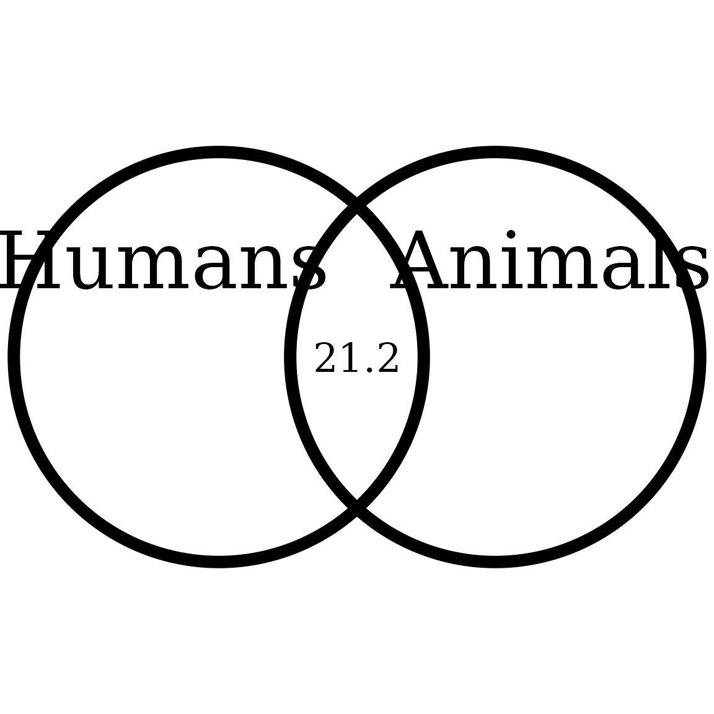

Interpolating the Inclusion of the Other in the Self Scale
Rémi Thériault
February 28, 2020
Source:vignettes/circles.Rmd
circles.RmdFor anyone in social psychology using the Inclusion of the Other in the Self (IOS) Scale to measure self-other merging, you might have wished that you could know for sure how much self-other overlap there is between your participant and a target group or individual.
Indeed, the IOS response choices go from 1 to 7 only, and unfortunately these don’t match the percentage overlap from the circle images (i.e., 1/7 is not 14% overlap, and 7/7 is not 100% overlap). You can observe this on the original IOS scale below.

So through trial and error (using the VennDiagram package), I was able to determine the approximate actual overlap from the pictures (below).

I feel like the overlap is pretty close to the original scale. Based on this, I used the approx() function to interpolate any responses so that 1 = 0% (overlap), 2 = 10%, 3 = 20%, 4 = 30%, 5 = 55%, 6 = 65%, and 7 (the maximum) = 85%.
But that also means that a continuous response (for example based on a group average) can also be plotted accurately (e.g., a score of 6.84 would turn into 81.8 % overlap). Let’s see a few examples.
Getting started
Load the rempsyc package:
Note: If you haven’t installed this package yet, you will need to install it via the following command:
devtools::install_github("rempsyc/rempsyc"). Packagedevtoolsis necessary for this command. If you haven’t installeddevtoolsyet, install it viainstall.packages("devtools").
Changing labels
You can also change group labels with the categories argument, although ‘Self’ and ‘Other’ are the defaults.
overlap_circle(3.12, categories = c("Humans","Animals"))
Saving to file (PDF or PNG)
First save the plot to an object:
plot <- overlap_circle(3.5)
Then you can use the ggplot2 save command directly with the object name:
ggsave(plot, file="overlap.pdf", width=7, height=7, unit='in', dpi=300)
# Change the path to where you would like to save it.
# If you copy-paste your path name, remember to use "R" slashes ('/' rather than '\').
# Also remember to specify the .pdf extension of the file.Example figure
This allowed me for instance, for one study, to compare three of my groups side-by-side following an intervention:

Thanks for checking in
Make sure to check out this page again if you use the code after a time or if you encounter errors, as I periodically update or improve the code. Feel free to contact me for comments, questions, or requests to improve this function at https://github.com/rempsyc/rempsyc/issues. See all tutorials here: https://remi-theriault.com/tutorials.